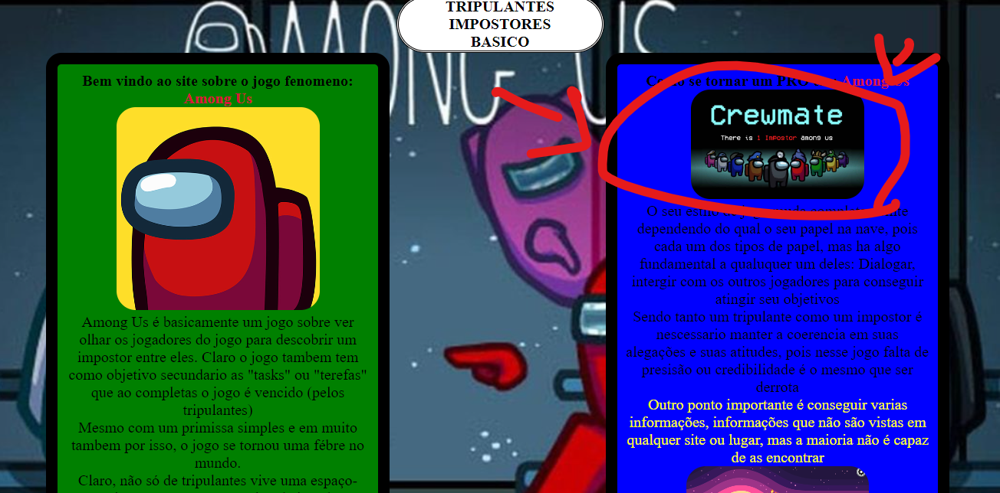

OPA! Aqui não é o lugar que você queria, né?
Se você está aqui, é porque clicou nos links da aba de navegação, mas infelizmente, as páginas estão escondidas.
Mas não se preocupe, tanto a página dos impostores quanto dos tripulantes estão fáceis de achar.
Talvez se você clicar em uma imagem? (Tem um segredo com 5% de chance em cada clique.)
Para voltar à página inicial, é só clicar em "Base" na aba de navegação.
De qualquer forma, boa sorte!! E até mais.